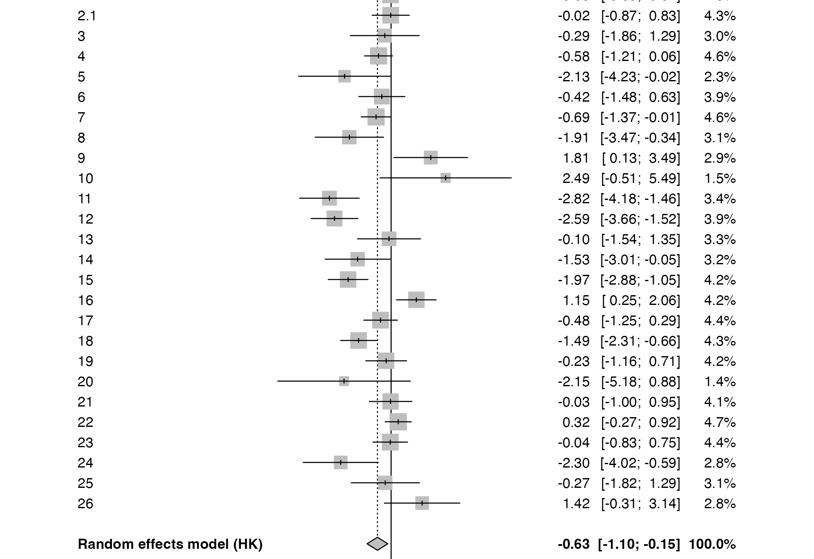
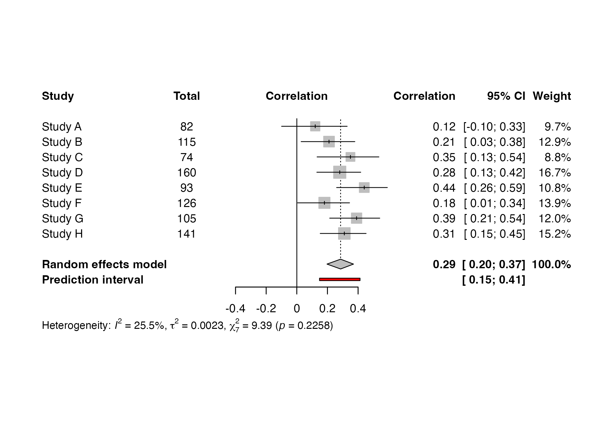
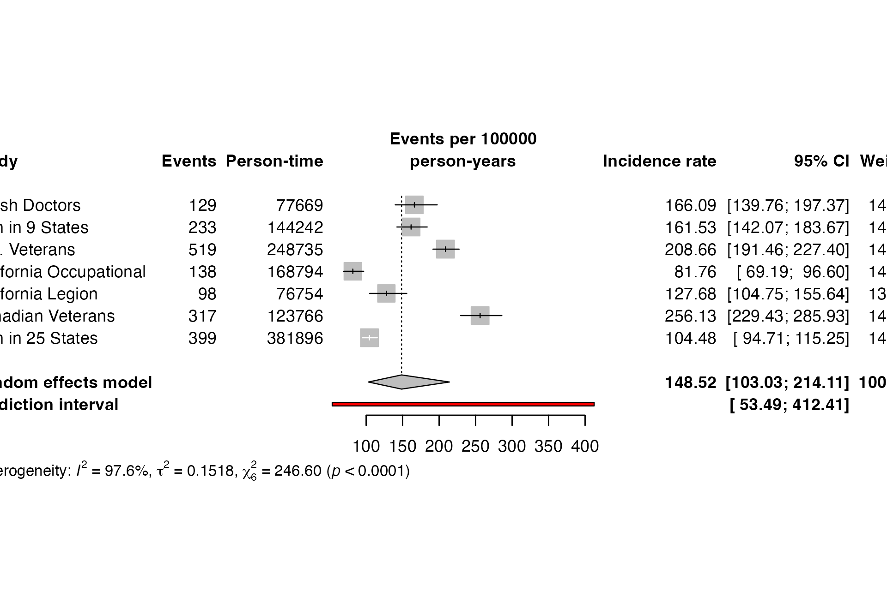

Case study: generic effects, correlations, and incidence rates
Source:vignettes/case-additional-models.Rmd
case-additional-models.RmdThis case study covers three common situations that do not use raw two-arm means or binary-event counts: published estimates with standard errors, correlations with sample sizes, and incidence rates based on person-time.
Generic inverse-variance meta-analysis
meta_generic() pools study estimates when an effect and
its uncertainty are already available. Pagliaro1992
contains log odds ratios and standard errors. Some identifiers repeat,
so duplicate_action = "make_unique" preserves every row
while creating unambiguous display labels.
generic_fit <- meta_generic(
Pagliaro1992, effect = "logOR", se = "selogOR", studylab = "id",
measure = "Odds ratio", backtransform = "exp",
duplicate_action = "make_unique"
)
summary(generic_fit)
#> Odds ratio 95% CI %W(random)
#> 1 -2.2532 [-3.8175; -0.6888] 3.1
#> 1.1 -0.5320 [-1.5199; 0.4559] 4.1
#> 2 -0.0279 [-0.8935; 0.8378] 4.3
#> 2.1 -0.0168 [-0.8654; 0.8318] 4.3
#> 3 -0.2877 [-1.8628; 1.2874] 3.0
#> 4 -0.5754 [-1.2138; 0.0630] 4.6
#> 5 -2.1276 [-4.2310; -0.0242] 2.3
#> 6 -0.4241 [-1.4757; 0.6274] 3.9
#> 7 -0.6879 [-1.3668; -0.0090] 4.6
#> 8 -1.9077 [-3.4711; -0.3442] 3.1
#> 9 1.8137 [ 0.1333; 3.4942] 2.9
#> 10 2.4935 [-0.5063; 5.4932] 1.5
#> 11 -2.8191 [-4.1791; -1.4591] 3.4
#> 12 -2.5881 [-3.6552; -1.5210] 3.9
#> 13 -0.0953 [-1.5368; 1.3462] 3.3
#> 14 -1.5294 [-3.0109; -0.0479] 3.2
#> 15 -1.9656 [-2.8769; -1.0544] 4.2
#> 16 1.1527 [ 0.2486; 2.0567] 4.2
#> 17 -0.4820 [-1.2524; 0.2883] 4.4
#> 18 -1.4867 [-2.3087; -0.6647] 4.3
#> 19 -0.2256 [-1.1579; 0.7067] 4.2
#> 20 -2.1518 [-5.1814; 0.8779] 1.4
#> 21 -0.0253 [-0.9974; 0.9467] 4.1
#> 22 0.3249 [-0.2739; 0.9238] 4.7
#> 23 -0.0383 [-0.8283; 0.7517] 4.4
#> 24 -2.3026 [-4.0187; -0.5865] 2.8
#> 25 -0.2657 [-1.8243; 1.2929] 3.1
#> 26 1.4171 [-0.3079; 3.1421] 2.8
#>
#> Number of studies: k = 28
#>
#> Odds ratio 95% CI t p-value
#> Random effects model (HK) -0.6251 [-1.0988; -0.1513] -2.71 0.0116
#> Prediction interval [-2.6570; 1.4068]
#>
#> Quantifying heterogeneity (with 95% CIs):
#> tau^2 = 0.9326 [0.4866; 2.5814]; tau = 0.9657 [0.6976; 1.6067]
#> I^2 = 73.2% [61.0%; 81.5%]; H = 1.93 [1.60; 2.33]
#>
#> Test of heterogeneity:
#> Q d.f. p-value
#> 100.56 27 < 0.0001
#>
#> Details of meta-analysis methods:
#> - Inverse variance method
#> - Restricted maximum-likelihood estimator for tau^2
#> - Q-Profile method for confidence interval of tau^2 and tau
#> - Calculation of I^2 based on Q
#> - Hartung-Knapp adjustment for random effects model (df = 27)
#> - Prediction interval based on t-distribution (df = 27)
render_gt(table_meta(generic_fit))| Study | Weight (%) | Estimate [95% CI] |
|---|---|---|
| 1 | 3.1 | 0.105 [0.022, 0.502] |
| 1.1 | 4.1 | 0.587 [0.219, 1.578] |
| 2 | 4.3 | 0.973 [0.409, 2.311] |
| 2.1 | 4.3 | 0.983 [0.421, 2.297] |
| 3 | 3.0 | 0.750 [0.155, 3.623] |
| 4 | 4.6 | 0.562 [0.297, 1.065] |
| 5 | 2.3 | 0.119 [0.015, 0.976] |
| 6 | 3.9 | 0.654 [0.229, 1.873] |
| 7 | 4.6 | 0.503 [0.255, 0.991] |
| 8 | 3.1 | 0.148 [0.031, 0.709] |
| 9 | 2.9 | 6.133 [1.143, 32.925] |
| 10 | 1.5 | 12.103 [0.603, 243.044] |
| 11 | 3.4 | 0.060 [0.015, 0.232] |
| 12 | 3.9 | 0.075 [0.026, 0.218] |
| 13 | 3.3 | 0.909 [0.215, 3.843] |
| 14 | 3.2 | 0.217 [0.049, 0.953] |
| 15 | 4.2 | 0.140 [0.056, 0.348] |
| 16 | 4.2 | 3.167 [1.282, 7.820] |
| 17 | 4.4 | 0.618 [0.286, 1.334] |
| 18 | 4.3 | 0.226 [0.099, 0.514] |
| 19 | 4.2 | 0.798 [0.314, 2.027] |
| 20 | 1.4 | 0.116 [0.006, 2.406] |
| 21 | 4.1 | 0.975 [0.369, 2.577] |
| 22 | 4.7 | 1.384 [0.760, 2.519] |
| 23 | 4.4 | 0.962 [0.437, 2.121] |
| 24 | 2.8 | 0.100 [0.018, 0.556] |
| 25 | 3.1 | 0.767 [0.161, 3.643] |
| 26 | 2.8 | 4.125 [0.735, 23.152] |
| Pooled | NA | 0.535 [0.333, 0.860] |
| I² = proportion of total observed variability attributable to between-study heterogeneity. Not a significance test; magnitude depends on study precision and number of studies. | ||
| Study | Weight (%) | Estimate [95% CI] |
|---|---|---|
| I² = proportion of total observed variability attributable to between-study heterogeneity. Not a significance test; magnitude depends on study precision and number of studies. | ||
forest_meta(generic_fit)
Generic inverse-variance meta-analysis of odds ratios.
#> Forest plot displayed in Viewer. Use save_as = 'pdf', 'png', or 'tiff' to export.The analysis is performed on the log scale and displayed on the odds-ratio scale, avoiding invalid arithmetic while keeping the output interpretable.
Meta-analysis of correlations
meta_cor() applies Fisher’s z transformation internally
and returns results on the correlation scale. This small dataset is
simulated solely to make the workflow reproducible.
correlations <- data.frame(
study = paste("Study", LETTERS[1:8]),
r = c(0.12, 0.21, 0.35, 0.28, 0.44, 0.18, 0.39, 0.31),
n = c(82, 115, 74, 160, 93, 126, 105, 141)
)
cor_fit <- meta_cor(correlations, cor = "r", n = "n",
studylab = "study")
summary(cor_fit)
#> COR 95% CI %W(random)
#> Study A 0.1200 [-0.0996; 0.3285] 9.7
#> Study B 0.2100 [ 0.0280; 0.3786] 12.9
#> Study C 0.3500 [ 0.1321; 0.5357] 8.8
#> Study D 0.2800 [ 0.1305; 0.4170] 16.7
#> Study E 0.4400 [ 0.2596; 0.5908] 10.8
#> Study F 0.1800 [ 0.0053; 0.3441] 13.9
#> Study G 0.3900 [ 0.2144; 0.5412] 12.0
#> Study H 0.3100 [ 0.1525; 0.4521] 15.2
#>
#> Number of studies: k = 8
#> Number of observations: o = 896
#>
#> COR 95% CI t p-value
#> Random effects model 0.2857 [0.1968; 0.3699] 7.36 0.0002
#> Prediction interval [0.1480; 0.4125]
#>
#> Quantifying heterogeneity (with 95% CIs):
#> tau^2 = 0.0023 [0.0000; 0.0486]; tau = 0.0479 [0.0000; 0.2204]
#> I^2 = 25.5% [0.0%; 66.2%]; H = 1.16 [1.00; 1.72]
#>
#> Test of heterogeneity:
#> Q d.f. p-value
#> 9.39 7 0.2258
#>
#> Details of meta-analysis methods:
#> - Inverse variance method
#> - Restricted maximum-likelihood estimator for tau^2
#> - Q-Profile method for confidence interval of tau^2 and tau
#> - Calculation of I^2 based on Q
#> - Hartung-Knapp adjustment for random effects model (df = 7)
#> - Prediction interval based on t-distribution (df = 7)
#> - Fisher's z transformation of correlations
render_gt(table_meta(cor_fit))| Study | Weight (%) | Estimate [95% CI] |
|---|---|---|
| Study A | 9.7 | 0.120 [-0.100, 0.328] |
| Study B | 12.9 | 0.210 [0.028, 0.379] |
| Study C | 8.8 | 0.350 [0.132, 0.536] |
| Study D | 16.7 | 0.280 [0.131, 0.417] |
| Study E | 10.8 | 0.440 [0.260, 0.591] |
| Study F | 13.9 | 0.180 [0.005, 0.344] |
| Study G | 12.0 | 0.390 [0.214, 0.541] |
| Study H | 15.2 | 0.310 [0.153, 0.452] |
| Pooled | NA | 0.286 [0.197, 0.370] |
| I² = proportion of total observed variability attributable to between-study heterogeneity. Not a significance test; magnitude depends on study precision and number of studies. | ||
| Study | Weight (%) | Estimate [95% CI] |
|---|---|---|
| I² = proportion of total observed variability attributable to between-study heterogeneity. Not a significance test; magnitude depends on study precision and number of studies. | ||
forest_meta(cor_fit)
Meta-analysis displayed on the correlation scale.
#> Forest plot displayed in Viewer. Use save_as = 'pdf', 'png', or 'tiff' to export.Correlations must lie strictly between -1 and 1, and each study must have more than three observations. The function checks these conditions before fitting.
Meta-analysis of incidence rates
meta_rate() pools event rates while accounting for
differing amounts of person-time. lungcancer reports deaths
and person-years among smokers. Rates are displayed per 100,000
person-years.
rate_fit <- meta_rate(
lungcancer, event = "d.smokers", time = "py.smokers",
studylab = "study", irscale = 100000, irunit = "person-years"
)
summary(rate_fit)
#> events 95% CI %W(random)
#> British Doctors 166.0894 [139.7648; 197.3723] 14.1
#> Men in 9 States 161.5341 [142.0693; 183.6658] 14.4
#> U.S. Veterans 208.6558 [191.4551; 227.4019] 14.6
#> California Occupational 81.7565 [ 69.1931; 96.6009] 14.1
#> California Legion 127.6806 [104.7468; 155.6358] 13.8
#> Canadian Veterans 256.1285 [229.4297; 285.9342] 14.5
#> Men in 25 States 104.4787 [ 94.7141; 115.2501] 14.5
#>
#> Number of studies: k = 7
#> Number of events: e = 1833
#>
#> events 95% CI
#> Random effects model 148.5238 [103.0266; 214.1128]
#> Prediction interval [ 53.4893; 412.4058]
#>
#> Quantifying heterogeneity (with 95% CIs):
#> tau^2 = 0.1518 [0.0601; 0.7510]; tau = 0.3896 [0.2452; 0.8666]
#> I^2 = 97.6% [96.4%; 98.3%]; H = 6.41 [5.29; 7.77]
#>
#> Test of heterogeneity:
#> Q d.f. p-value
#> 246.60 6 < 0.0001
#>
#> Details of meta-analysis methods:
#> - Inverse variance method
#> - Restricted maximum-likelihood estimator for tau^2
#> - Q-Profile method for confidence interval of tau^2 and tau
#> - Calculation of I^2 based on Q
#> - Hartung-Knapp adjustment for random effects model (df = 6)
#> - Prediction interval based on t-distribution (df = 6)
#> - Log transformation
#> - Normal approximation confidence interval for individual studies
#> - Events per 100000 person-years
render_gt(table_meta(rate_fit))| Study | Weight (%) | Estimate [95% CI] |
|---|---|---|
| British Doctors | 14.1 | 166.089 [139.765, 197.372] |
| Men in 9 States | 14.4 | 161.534 [142.069, 183.666] |
| U.S. Veterans | 14.6 | 208.656 [191.455, 227.402] |
| California Occupational | 14.1 | 81.756 [69.193, 96.601] |
| California Legion | 13.8 | 127.681 [104.747, 155.636] |
| Canadian Veterans | 14.5 | 256.129 [229.430, 285.934] |
| Men in 25 States | 14.5 | 104.479 [94.714, 115.250] |
| Pooled | NA | 148.524 [103.027, 214.113] |
| I² = proportion of total observed variability attributable to between-study heterogeneity. Not a significance test; magnitude depends on study precision and number of studies. | ||
| Study | Weight (%) | Estimate [95% CI] |
|---|---|---|
| I² = proportion of total observed variability attributable to between-study heterogeneity. Not a significance test; magnitude depends on study precision and number of studies. | ||
forest_meta(rate_fit)
Incidence-rate meta-analysis per 100,000 person-years.
#> Forest plot displayed in Viewer. Use save_as = 'pdf', 'png', or 'tiff' to export.Zero-event studies are retained using the requested continuity correction. The original events and person-time remain in the fitted object’s analysis data for audit and reporting.
Choosing a function
Use meta_generic() for an effect estimate with a
standard error, variance, or confidence interval;
meta_cor() for correlations and sample sizes; and
meta_rate() for event counts with person-time. For raw
binary, continuous, or proportion data, use meta_ratio(),
meta_mean(), or meta_prop() instead.